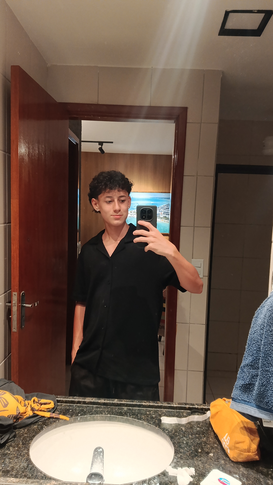

Sobre mim
Estudo na ETEC Rosa Perrone Scavone, estou cursando o primeiro ano de ensino médio junto com técnico em habilitação de desenvolvimento de sistemas. Possuo dois certificados de curso de Cybersegurança da Network Cisco Security. Além disso, tenho experiência e conhecimento na criação de sites HTML/CSS e linguagens C, C++.